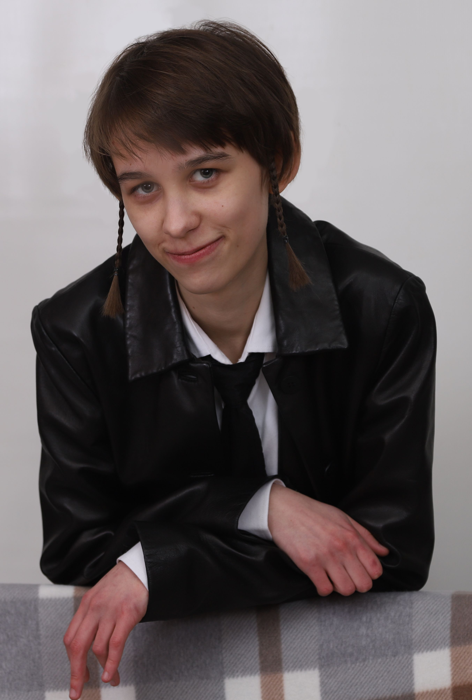

До того, як я вступила до університету, я закінчила художню школу та вивчала кілька дисциплін у дитячій музичній школі. Завдяки отриманим знанням роблю власні невеликі творчі проєкти (ориґамі фігурки, оригінальні значки, плетіння браслетів і малювання картин) та самостійно опановую гру на калімбі.
Пройшла навчання у менторській програмі “Покоління перемоги” і успішно завершила навчальний марафон в особливому безпечному місці для зростання й навчання під супроводом досвідчених та мотивованих педагогів у форматі дружньої взаємодії та сталого супроводу онлайн — інноваційна освітня платформа «ПОВІР». Закінчила школу, отримавши свідоцтво з відзнакою.
Опановувати знання в університеті мені допомагають аналітичний склад розуму, відповідальність та зосередженість. Завдяки предметам, що викладаються, здобуваю навички роботи в команді. Маю високий рівень володіння англійською мовоюc
